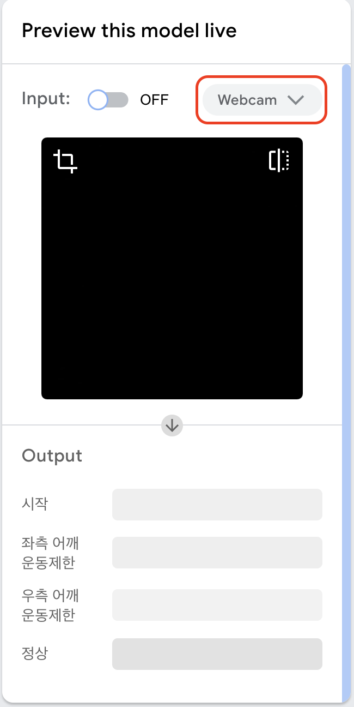

자가진단 테스트
내 휴대폰을 이용한 오십견 자가진단 테스트 해보기
(기본 인터넷 애플리케이션에서 실행해주세요)
(1) 아래의 Start 버튼을 누른 후, 카메라에 대한 접근 권한을 허용합니다.
(2) 아래 화면에 자신의 얼굴이 나오는 것을 확인합니다.
(3) 벽에 등을 기댄 후 옆으로 나란히 하였을 때 양쪽 팔이 화면에 모두 나올 수 있도록, 휴대폰과 신체의 간격을 조정합니다.
(4) 양측 팔을 벽에 떨어지지 않게 하면서, 팔꿈치를 곧게 편 채 최대한 귀에 닿을 수 있게 들어봅니다.
(5) 최대한 팔을 든 자세를 유지한 채, 숫자 1이 나오는 항목이 무엇인지 확인합니다.
Teachable Machine Pose Model
--만약 Start 버튼을 눌러도 실행이 되지 않는다면
여기를 클릭하여 아래의 순서대로 해주세요.
1. 새 창이 실행되면, 아래 그림과 같이 설정에서 Webcam을 file로 변경합니다.

2. (1)에서 (5)까지 실행 후 카메라로 촬영한 사진(이미지)을 업로드하여 100%가 나오는 항목이 무엇인지 확인합니다.
평가 결과
- 시작: 위의 순서에 따라 검사를 다시 진행해주세요.
- 좌측 어깨운동제한: 좌측 어깨의 오십견이 의심됩니다.
- 우측 어깨운동제한: 우측 어깨의 오십견이 의심됩니다.
- 정상: 양측 모두 정상입니다.